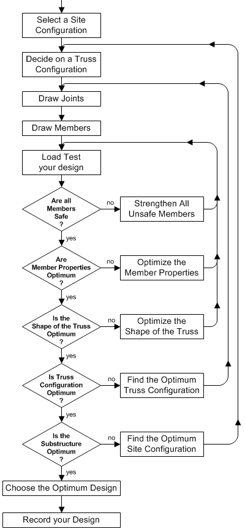

to browse through the design process,
one step at a time.
to browse through the design process,
one step at a time.
When you use the Bridge Designer 2016, you will experience the engineering design process in simplified form. You will design a steel truss bridge in much the same manner that practicing civil engineers design real highway bridges.
Your objective is to create an optimal bridge design. An optimal design is one that satisfies all of the design specifications, passes a simulated , and costs as little as possible.
The diagram below shows an effective methodology for developing an optimal design. To learn more about this methodology:
to browse through the design process,
one step at a time.
